vignettes/estimate_composite_stochastic_models.Rmd
estimate_composite_stochastic_models.RmdThis vignette shows how to estimate composite stochastic models using
gmwm2(). We generate data from known models, fit composite
candidates, and visualize the results.
We consider a zero-mean stochastic process generated from a composite model parameterized by .
Given a parametric model with parameters , the GMWM estimator computes by solving:
where is the empirical wavelet variance of the observed series and is the theoretical wavelet variance implied by the model.
library(gmwmx2)
boxplot_mean_dot <- function(x, ...) {
boxplot(x, ...)
x_mat <- as.matrix(x)
mean_vals <- colMeans(x_mat, na.rm = TRUE)
points(seq_along(mean_vals), mean_vals, pch = 16, col = "black", cex = 1.5)
}
n <- 10000
sigma2_wn = 25
phi_ar1 = 0.99
sigma2_ar1 = 1
mod1 <- wn(sigma2 = sigma2_wn) + ar1(phi = phi_ar1, sigma2 = sigma2_ar1)
y1 <- generate(mod1, n = n)
plot(y1)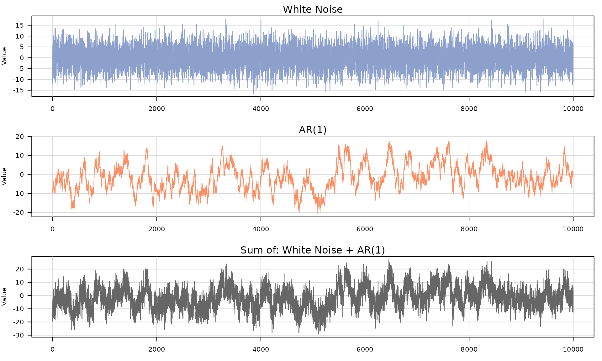
## GMWM fit
##
## Stochastic model
## Sum of 2 processes
##
## [1] White Noise
## Parameters : sigma2
##
## [2] AR(1)
## Parameters : phi, sigma2
##
##
## Estimated parameters
## 1) White Noise: sigma2 = 24.34
## 2) AR(1): phi = 0.9887, sigma2 = 1.063
##
## Optimization
## Convergence : converged (code 0)
## Iterations : 74
## Loss : 0.06334
plot(fit1)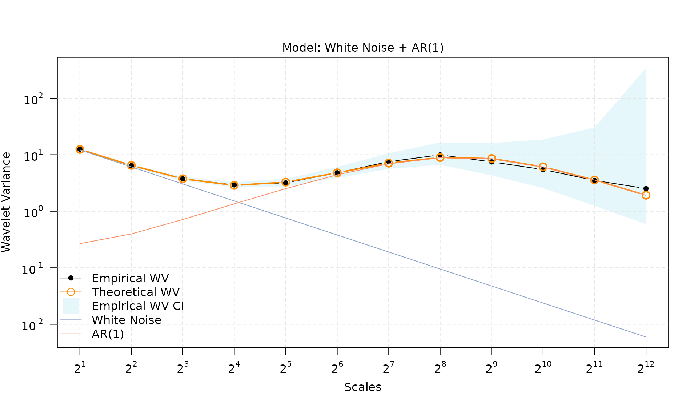
B = 100
mat_res = matrix(NA, nrow = B, ncol = 3)
for(b in seq(B)){
y <- generate(mod1, n = n)
fit = gmwm2(y, model = wn() + ar1())
mat_res[b,] = c(fit$theta_domain$`White Noise_1`, fit$theta_domain$`AR(1)_2`)
# cat("Done with b =", b, "\n")
}
par(mfrow = c(1, 3))
boxplot_mean_dot(mat_res[, 1], main = expression(sigma[WN]^2), ylab = "Estimated Value")
abline(h = sigma2_wn)
boxplot_mean_dot(mat_res[, 2], main = expression(phi[AR1]), ylab = "Estimated Value")
abline(h = phi_ar1)
boxplot_mean_dot(mat_res[, 3], main = expression(sigma[AR1]^2), ylab = "Estimated Value")
abline(h = sigma2_ar1)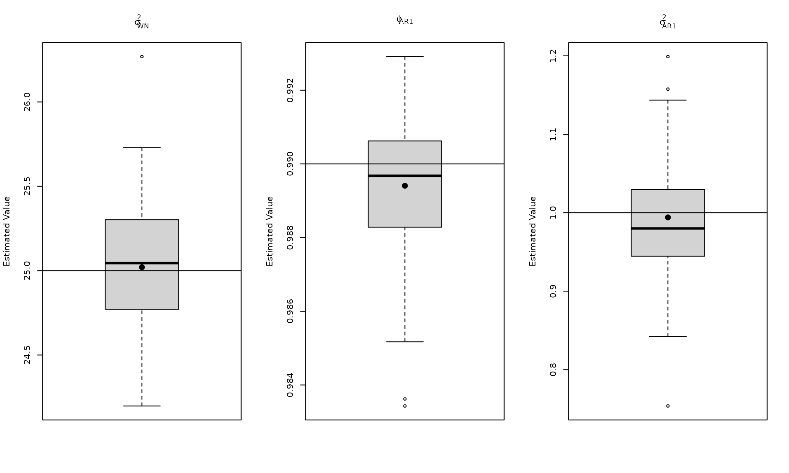
sigma2_wn = 5
kappa_pl = -0.9
sigma2_pl = 1
mod2 <- wn(sigma2_wn) + pl(kappa = kappa_pl, sigma2 = sigma2_pl)
y2 <- generate(mod2, n = n)
plot(y2)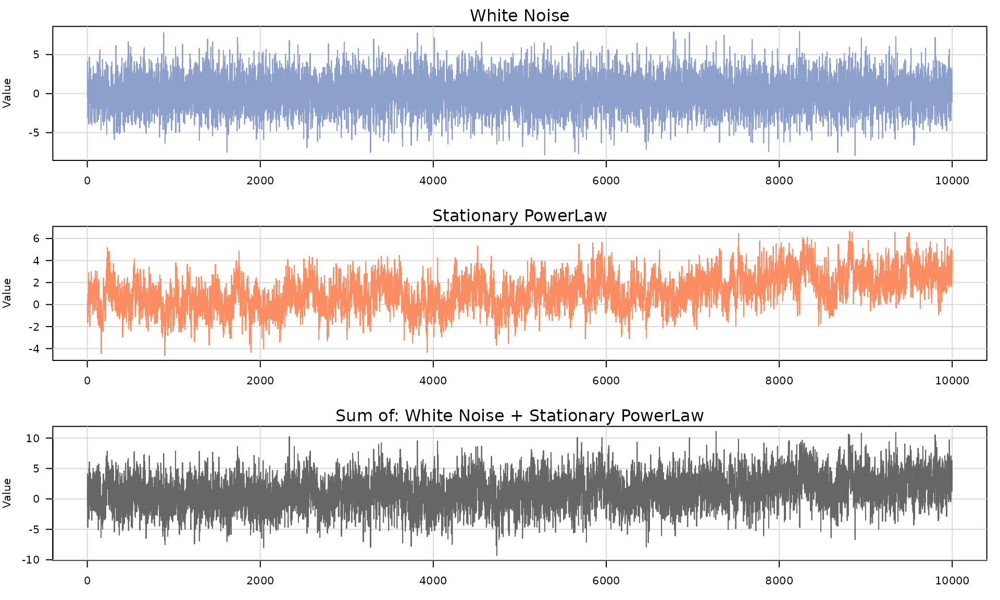
## GMWM fit
##
## Stochastic model
## Sum of 2 processes
##
## [1] White Noise
## Parameters : sigma2
##
## [2] Stationary PowerLaw
## Parameters : kappa, sigma2
##
##
## Estimated parameters
## 1) White Noise: sigma2 = 4.67
## 2) Stationary PowerLaw: kappa = -0.8562, sigma2 = 1.2
##
## Optimization
## Convergence : converged (code 0)
## Iterations : 52
## Loss : 0.04163
plot(fit2)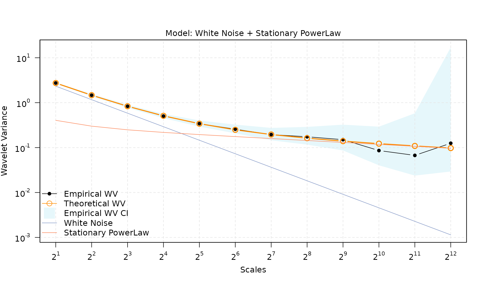
B = 100
mat_res = matrix(NA, nrow = B, ncol = 3)
for(b in seq(B)){
y <- generate(mod2, n = n)
fit2 = gmwm2(y, model = wn() + pl())
mat_res[b,] = c(fit2$theta_domain$`White Noise_1`, fit2$theta_domain$`Stationary PowerLaw_2`)
# cat("Done with b =", b, "\n")
}
par(mfrow = c(1, 3))
boxplot_mean_dot(mat_res[, 1], main = expression(sigma[WN]^2), ylab = "Estimated Value")
abline(h = sigma2_wn)
boxplot_mean_dot(mat_res[, 2], main = expression(kappa[PL]), ylab = "Estimated Value")
abline(h = kappa_pl)
boxplot_mean_dot(mat_res[, 3], main = expression(sigma[PL]^2), ylab = "Estimated Value")
abline(h = sigma2_pl)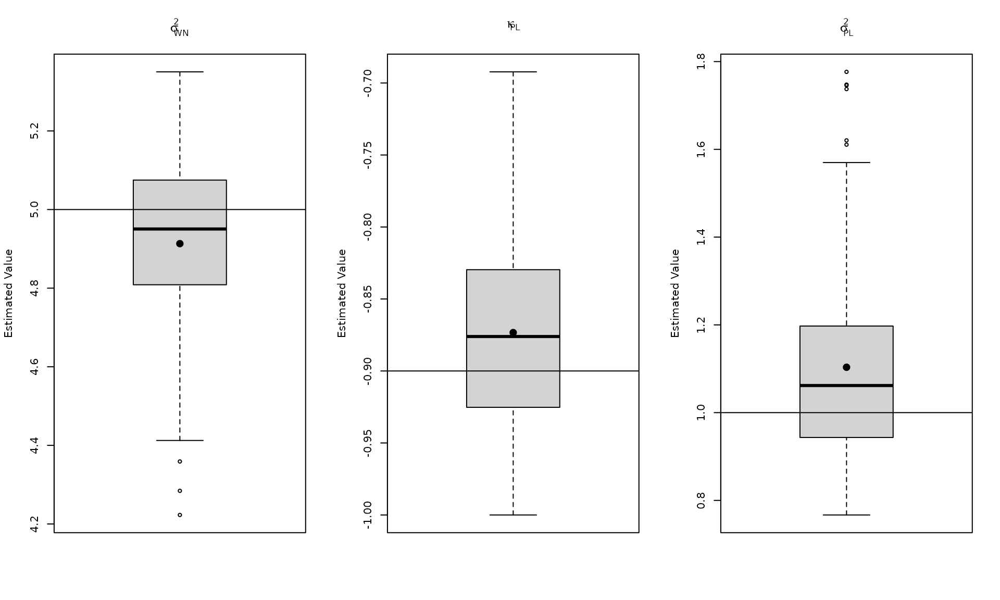
sigma2_wn = 5
phi_ar1 = 0.98
sigma2_ar1 = 1
sigma2_rw = 0.1
mod3 <- wn(sigma2_wn) + ar1(phi = phi_ar1, sigma2 = sigma2_ar1) + rw(sigma2_rw)
y3 <- generate(mod3, n = n)
plot(y3)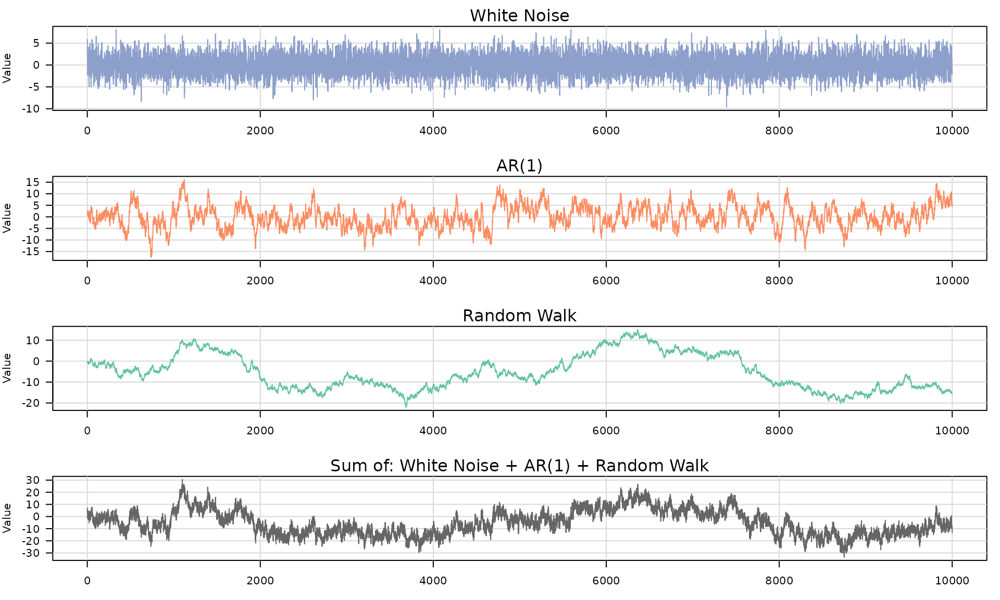
## GMWM fit
##
## Stochastic model
## Sum of 3 processes
##
## [1] White Noise
## Parameters : sigma2
##
## [2] AR(1)
## Parameters : phi, sigma2
##
## [3] Random Walk
## Parameters : sigma2
##
##
## Estimated parameters
## 1) White Noise: sigma2 = 5.118
## 2) AR(1): phi = 0.9724, sigma2 = 1.046
## 3) Random Walk: sigma2 = 0.1309
##
## Optimization
## Convergence : converged (code 0)
## Iterations : 100
## Loss : 0.02272
plot(fit3)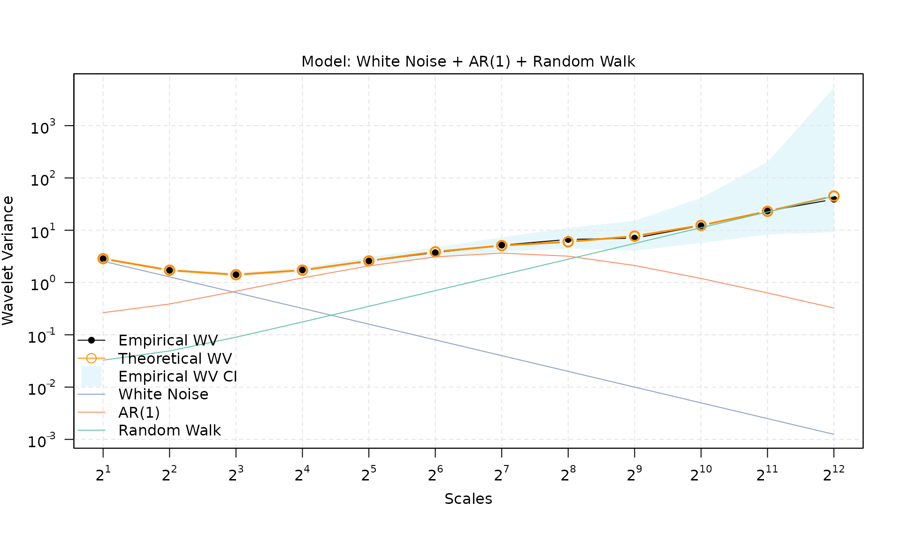
B = 100
mat_res = matrix(NA, nrow = B, ncol = 4)
for(b in seq(B)){
y <- generate(mod3, n = n)
fit3 = gmwm2(y, model = wn() + ar1() + rw())
mat_res[b,] = c(fit3$theta_domain$`White Noise_1`, fit3$theta_domain$`AR(1)_2`, fit3$theta_domain$`Random Walk_3`)
# cat("Done with b =", b, "\n")
}
par(mfrow = c(1, 4))
boxplot_mean_dot(mat_res[, 1], main = expression(sigma[WN]^2), ylab = "Estimated Value")
abline(h = sigma2_wn)
boxplot_mean_dot(mat_res[, 2], main = expression(phi[AR1]), ylab = "Estimated Value")
abline(h = phi_ar1)
boxplot_mean_dot(mat_res[, 3], main = expression(sigma[AR1]^2), ylab = "Estimated Value")
abline(h = sigma2_ar1)
boxplot_mean_dot(mat_res[, 4], main = expression(sigma[RW]^2), ylab = "Estimated Value")
abline(h = sigma2_rw)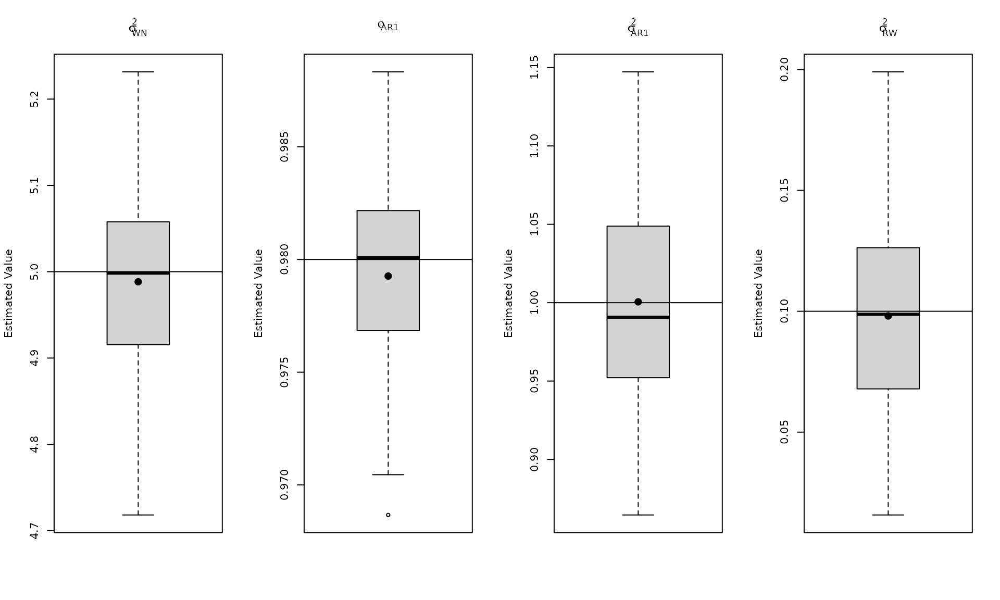
sigma2_wn = 20
sigma2_rw = 0.1
mod4 <- wn(sigma2_wn) + rw(sigma2_rw)
y4 <- generate(mod4, n = n)
plot(y4)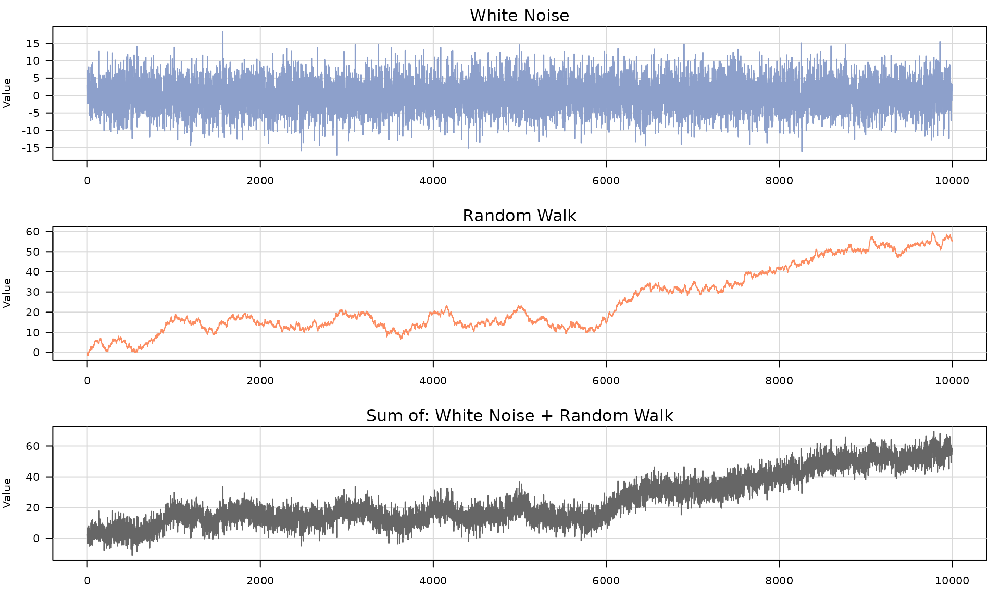
## GMWM fit
##
## Stochastic model
## Sum of 2 processes
##
## [1] White Noise
## Parameters : sigma2
##
## [2] Random Walk
## Parameters : sigma2
##
##
## Estimated parameters
## 1) White Noise: sigma2 = 20.31
## 2) Random Walk: sigma2 = 0.08104
##
## Optimization
## Convergence : converged (code 0)
## Iterations : 62
## Loss : 0.09572
plot(fit4)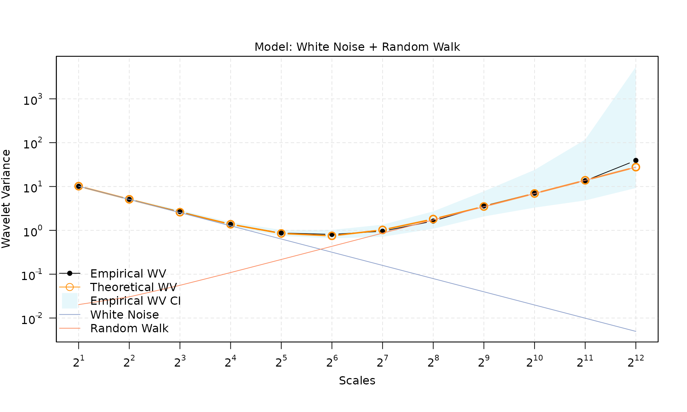
B = 100
mat_res = matrix(NA, nrow = B, ncol = 2)
for(b in seq(B)){
y <- generate(mod4, n = n)
fit4 = gmwm2(y, model = wn() + rw())
mat_res[b,] = c(fit4$theta_domain$`White Noise_1`, fit4$theta_domain$`Random Walk_2`)
# cat("Done with b =", b, "\n")
}
par(mfrow = c(1, 2))
boxplot_mean_dot(mat_res[, 1], main = expression(sigma[WN]^2), ylab = "Estimated Value")
abline(h = sigma2_wn)
boxplot_mean_dot(mat_res[, 2], main = expression(sigma[RW]^2), ylab = "Estimated Value")
abline(h = sigma2_rw)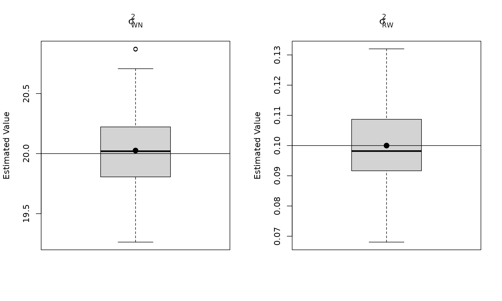